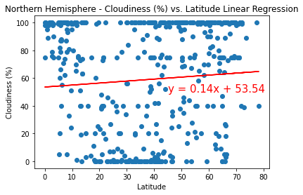
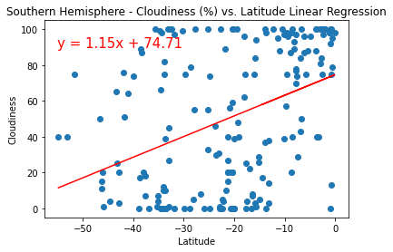

Entire Planet

There seems to be little correlations between latitude and clouds.
It's at least interesting to see that cloudiness seems to be binned according to percentages. This likely indicates that cloudiness is sometimes recorded as a human estimate, rather than calculation of area.
North Only
While breaking the linear regression into hemispheres, it seems that there is still no correlation to be found.
Also note the high prevalence of 100% cloudiness. This is likely because the measure of cloudiness here is area of coverage, but that would include very light clouds all the way to dangerous thunderstorms.
South Only
As seen in the northern hemisphere, there is no correlation found between latitude and cloudiness.